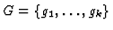
be a set of elements of J. If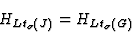
then G is a Gröbner basis of J with respect to
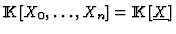
. J is said homogeneous if the relation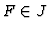
implies that all the homogeneous components of F are in J. Let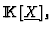
denote the set of homogeneous polynomials of total degree s (including the zero polynomial) which is a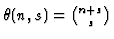
. If J is a homogeneous ideal, we let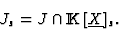
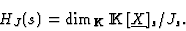
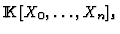
by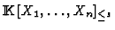
, the set of polynomials in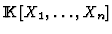
of total degree at most s (including the zero polynomial). Following the ideas in [12] it is posible to use the Hilbert function, to check if the specialisation of a Gröbner Basis of a homogeneous (with respect to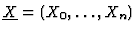
) ideal Jin

be a set of elements of J. If
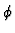
the specialization map giving values to the parameters in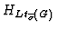
the Hilbert function of the ideal generated by the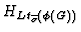
the Hilbert function of the ideal generated by the leading power products of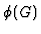
. If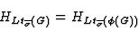
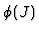
with respect to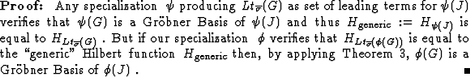